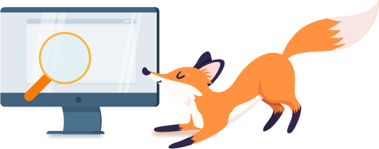

Was ist eine Suchmaschine?
Eine Suchmaschine ist wie ein riesiges Bücherregal im Internet. Wenn du etwas wissen möchtest, kannst du der Suchmaschine eine Frage stellen, und sie sucht für dich im ganzen Internet nach passenden Antworten.
Google ist eine sehr bekannte Suchmaschine. Der Unterschied zwischen Google und Kindersuchmaschinen ist, dass Kindersuchmaschinen speziell für Kinder gemacht sind. Während Google das ganze Internet durchsucht und alles findet, gibt es auf Kindersuchmaschinen nur Inhalte, die kinderfreundlich und sicher sind. Beispiele für Kindersuchmaschinen sind: